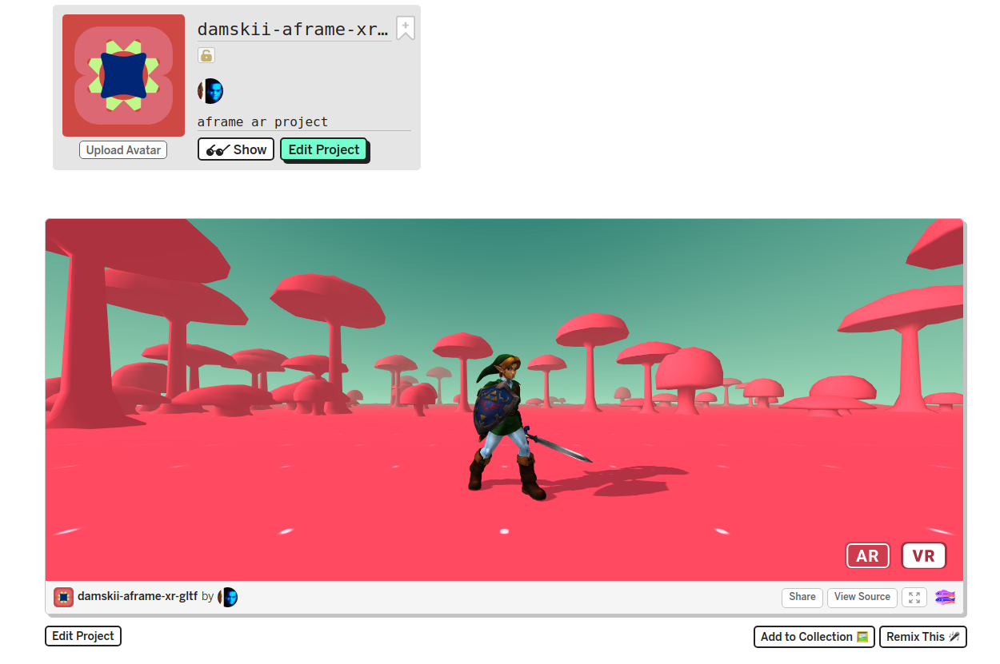
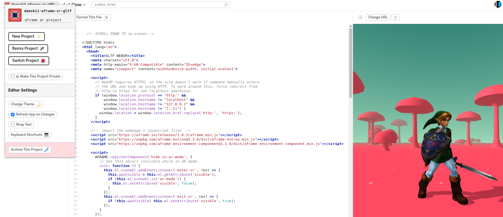
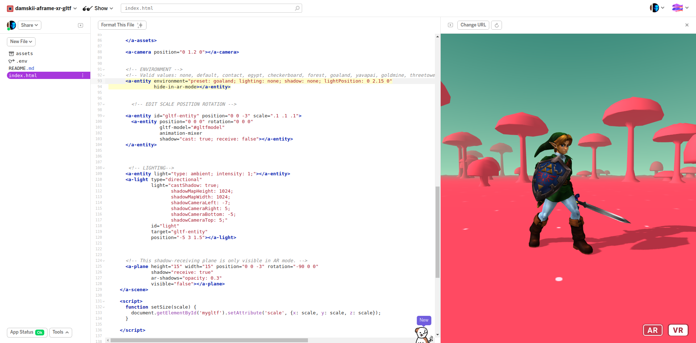
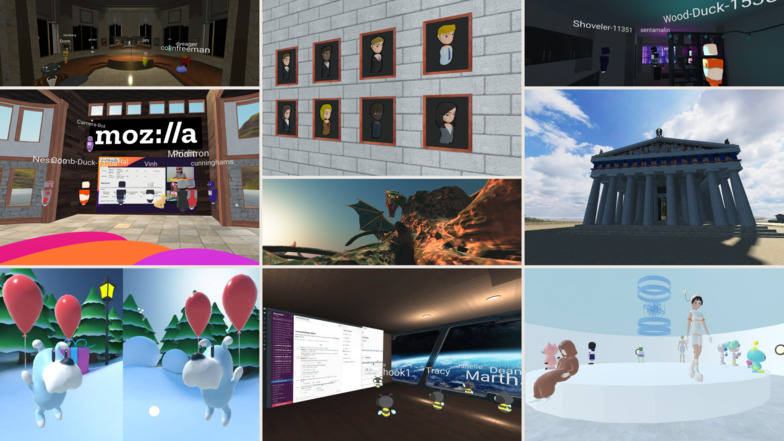
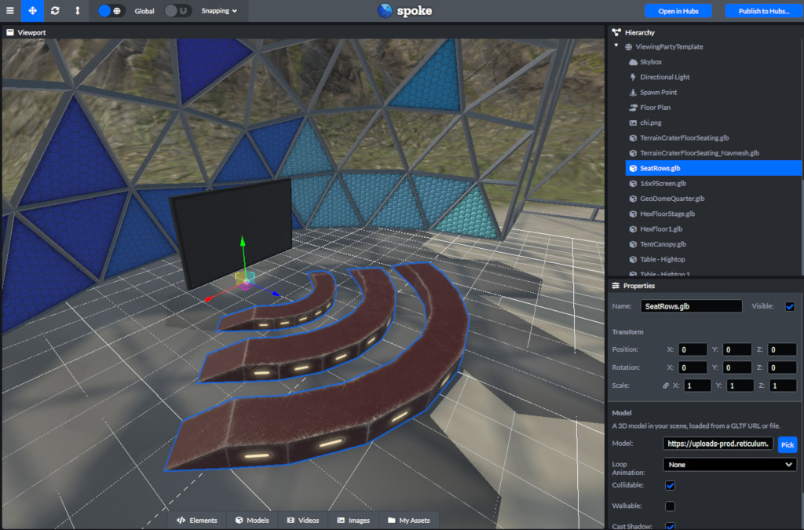

Design Tools For Web3D/XR
Dr. Damian Hills
https://damskii.github.io/GDUT-2022-WebToolsForXR
Design Tools For Web3D/XR
Dr. Damian Hills
Presentation Overview
• What is Web3D and WebXR
• A showcase of Web3D and XR
• Tools for Web3D/XR you can use online to create your own experiences
• Collaborative work with GDUT - Guangcai Project
What is Web3D?
• term used to describe interactive 3D content included in an HTML page
• viewable by a common Web browser via a special 3D viewer
• open formats for 3D viewing transmission, such as glTF
What is the WebXR standard?
• is a group of standards which are used together to support rendering 3D scenes to hardware designed for presenting VR/AR
• It builds upon a set of browser based technologies that include the WebGL standard that supports 3D rendering in browser environments.
• supports a range of mixed reality devices with an enabled browser, such as the Oculus browser for the Quest.
Why VR/AR on the web?
• No large IDE required for development, just a browser and text editor
• Use tools web developers know - javascript, HTML
• Desktop/Mobile Progressive Web Apps (PWA)
• Cross platform
Why WebXR tools for online delivery?
Progressive Enhancement is a design philosophy that centers around providing a baseline of essential content and functionality to as many users as possible, while at the same time going further and delivering the best possible experience only to users of the most modern browsers that can run all the required code.

Progressive Enhancement allows for both Web3D and WebXR
Some examples of Web3D/XR
• Visualisation & Art
• Games
• Online commerce, eg shopping
• Metaverse Futures (Avatars/VTubing)
Tools for Web3D and WebXR
Why web tools for 3D/XR
• Designers and Developers make websites that are easy to maintain
• Interoperability of online tools allow for interesting combinations of techniques
• Content you create is useful is many web contexts
Overview of Web Tools
• aframe - web framework for building XR experiences
• glitch - browser based project management
• GLTF - a standard format for 3D scenes and models
• Mozilla Hubs - open standards for social VR with privacy
• Other Web tools for 3D
Glitch.com - AFRAME
Glitch.com - "Project Management"
Glitch.com - "Remix a project"
Glitch.com - "Show next to code"
Glitch.com - "Demo Project"
Demo : https://damskii-aframe-xr-gltf.glitch.me/
Demo (project): https://glitch.com/~damskii-aframe-xr-gltf
On IOS? Get viewer app for WebXR
glTF™ (GL Transmission Format) is a royalty-free specification for the efficient transmission and loading of 3D scenes and models by applications.
glTF minimizes both the size of 3D assets, and the runtime processing needed to unpack and use those assets.
 gltf
gltf
glTF minimizes both the size of 3D assets, and the runtime processing needed to unpack and use those assets.
glTF defines an extensible, common publishing format for 3D content tools and services that streamlines authoring workflows and enables interoperable use of content across the industry.
Mozilla HUBS
Mozilla Spoke For HUBS


Guangcai Project
Bridging Knowledge between Craftsman and Learner in Chinese Intangible Cultural Heritage through WebAR
通过 WebAR 在中国非物质文化遗产中架起工匠与学习者之间的知识桥梁
Peng Tan, Yi Ji, Damian Hills, Tieming Fu

How to bridge knowledge between craftsman and learner in Chinese ICH teaching using WebAR?
如何在使用 WebAR 的中文 ICH 教学中架起工匠和学习者之间的知识？
• Simulate the embodied experience of the crafter by mirroring the gestures and poses performed by the master during porcelain crafting.
•通过模仿大师在瓷器制作过程中的手势和姿势来模拟工匠的具体体验。
• Enhance knowledge transfer between teacher and students by including tangible artefacts (plate)
• 通过包括有形的人工制品（板）加强师生之间的知识转移
Bridging Knowledge between Craftsman and Learner in Chinese Intangible Cultural Heritage through WebAR